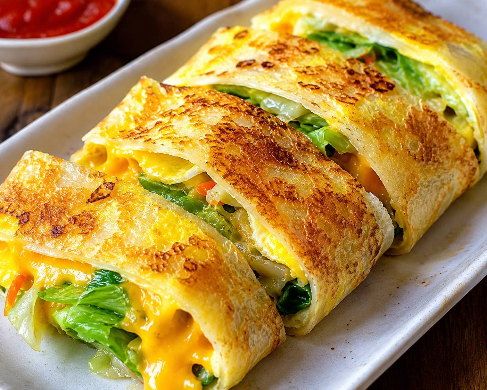

【早餐推薦】起司鮮蔬菜脆皮蛋餅  店家名稱： 巷弄手工早點 價位區間： 60 - 100 元 / 心得：5顆星 營業時間： 06:00 - 11:00 店家地址： 台中市南屯區xxx路xx號 美味心得 這家蛋餅的餅皮是現點現烙的，口感非常酥脆。內餡的起司給得很大方，拉絲效果十足！搭配店家自製的紅茶，是開啟美好一天完美的早餐組合。雖然早上排隊人潮較多，但店家動作很快，非常推薦大家來品嚐！ 返回美食主頁